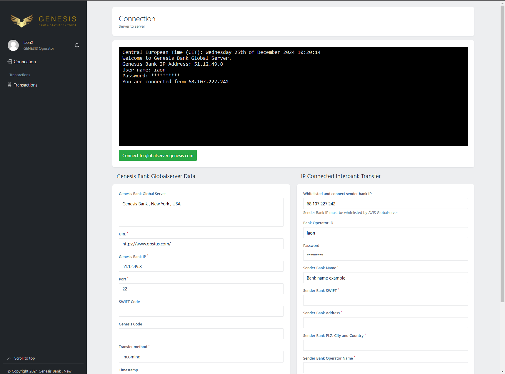

Hello, I’m Jotham.
I am an innovative and collaborative Software Engineer with over five years of experience in both B2C and B2B domains. Recognized for being a proactive team player, I bring a decisive, results-driven mindset to every project. I excel at working independently in dynamic, multicultural environments, consistently demonstrating the ability to thrive in fast-paced settings. My expertise spans development and DevOps, where I seamlessly collaborate across diverse teams, showcasing adaptability, effective communication, and a commitment to excellence in every facet of my work.
About Me
Latest Projects
Feedlot System
Feedlot System Overview
-
1. Structure & Pen Management
Multiple feedlots with categorized pens (backgrounding & feedlot).
Systematic pen transitions every 3–4 days, progressing cows to slaughter. -
2. Cow Management
Record live buy-ins, induction, weight tracking, feed consumption, and medication details.
Allocate pens based on weight and maintain lifecycle data. -
3. Reporting
Generate daily, weekly, and monthly summaries for live buys, inductions, and slaughter. -
4. Automation & Tracking
Automate reports, ensure real-time updates, and track costs, performance, and medical history. -
Additional
Efficiently manage weaners and optimize feedlot operations.
A comprehensive solution for streamlined feedlot operations and data management. -
Technologies Used
Developed using Angular, NestJS, MongoDB, and MySQL.
Designed with Tailwind CSS for a modern UI.
Automated deployment and CI/CD pipelines implemented with GitHub Actions.
Integrated AWS services with Amazon Cognito for secure authentication.
Axe Build
Developed a full-stack inventory management system to streamline operations for steel coil-based product manufacturing, utilizing a modern and efficient technology stack.
Key Features:
- Designed and implemented RESTful APIs for CRUD operations with Spring Boot.
- Built an interactive and responsive frontend using Angular.
- Integrated Flyway for seamless database migrations.
- Containerized the application with Docker for scalable deployment.
- Automated testing and deployment pipelines using GitHub Actions.
- Enhanced authentication and user management with AWS Cognito.
- Hosted the application on AWS for high availability and scalability.
- Improved test reliability and code quality with JUnit and Mockito.
Technologies Used:
Java, Angular, MySQL, Spring Boot, Docker, JUnit, Mockito, Flyway, AWS, AWS Cognito, and GitHub Actions.

Project PayX
I have thoroughly enjoyed the development journey of Project PayX. This robust payment system facilitates:
- Real-time communication among server operators.
- Payment generation and secure processing.
- Clearing and settlement message generation.
Key Features:
- IP-to-IP connection ensures seamless communication.
- Robust encryption guarantees secure and efficient transactions.
Technologies Used:
- Developed using Angular, MySQL, and Java.
- Hosted on Digital Ocean servers.
- Automated deployment and CI/CD pipelines implemented with GitHub Actions.
Internet Banking Platform
Internet Banking Platform
Engineered a comprehensive Internet Banking Platform with a wide range of functionalities, including:
- KYC verification for secure user onboarding.
- Fraud detection using advanced algorithms.
- IBAN generation for seamless international transactions.
- Account opening and management features.
Technologies Used:
Developed using Java, PHP, Flyway, AWS, and SQL, creating a robust and scalable financial solution.
Experience the Platform:
Explore the Internet Banking Platform here: Internet Banking Login.
Request a Demo:
To explore additional features, request a demo.

POS Application
Led the team in the end-to-end development, architecture, and deployment of a robust Point of Sale (POS) solution integrated into the UMS system, akin to a Play Store environment. Designed as a 'bank in a box,' the POS machine supports extensive payment methods, including offline transactions, preauthorization, and ABIQ, ensuring versatility and seamless functionality.
Key Features:
- Offline transactions for uninterrupted service.
- Preauthorization support for secure operations.
- ABIQ integration for enhanced versatility.
Technologies Used:
Developed using Android Studio, GitHub, UMS APIs, C#, Java, and SQL, delivering a seamless banking experience.
Request a Demo:
To experience the look and feel of the POS application, request a demo.
Banking Chatbot
Developed and architected an advanced banking chatbot, strategically integrating it into the financial landscape. This innovative chatbot facilitated seamless transactions on popular messaging platforms such as WhatsApp and Telegram. To enhance user engagement, cutting-edge AI capabilities were implemented, enabling the chatbot to interact intelligently and efficiently with users.
Technologies Used:
Built with C#, Java, JavaScript, jQuery, and Oscova. AI and machine learning capabilities were integrated using Oscova Bot Framework (Learn More).
Experience it here: BancUatBot on Telegram
Other Projects
Real-Time Intrusion Detection System explore
Developed a real-time Intrusion Detection System (IDS) using PyShark for network packet capture and analysis:
- Trained a RandomForest machine learning model on the CICIDS2018 dataset, achieving an accuracy of 94.2%.
- Deployed the system using Flask, allowing users to monitor network traffic and detect anomalies in real-time.
- Tools used: Python, PyShark, Flask, RandomForest, CICIDS2018 dataset.
Centralized Agricultural Portal for Tomato Leaf Diagnosis and Management explore
Developed a centralized platform using computer vision and deep learning techniques to diagnose tomato leaf diseases:
- Used the VGG19 model, trained on a plant village dataset with an accuracy of 84.67%.
- Deployed the platform locally using Flask, allowing farmers to upload images and receive disease diagnosis and prevention tips.
- Implemented features for user interaction, enabling farmers to ask questions and share solutions on the platform.
- Tools used: Python, Flask, TensorFlow, VGG19 model, MongoDB (for user data and diagnosis history).